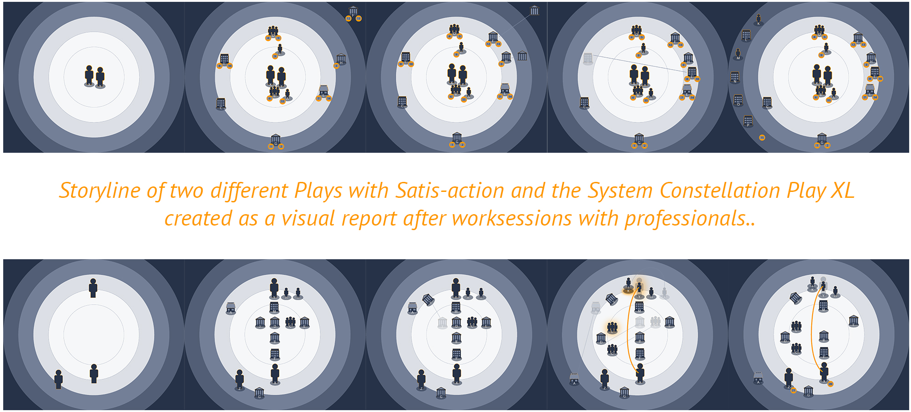
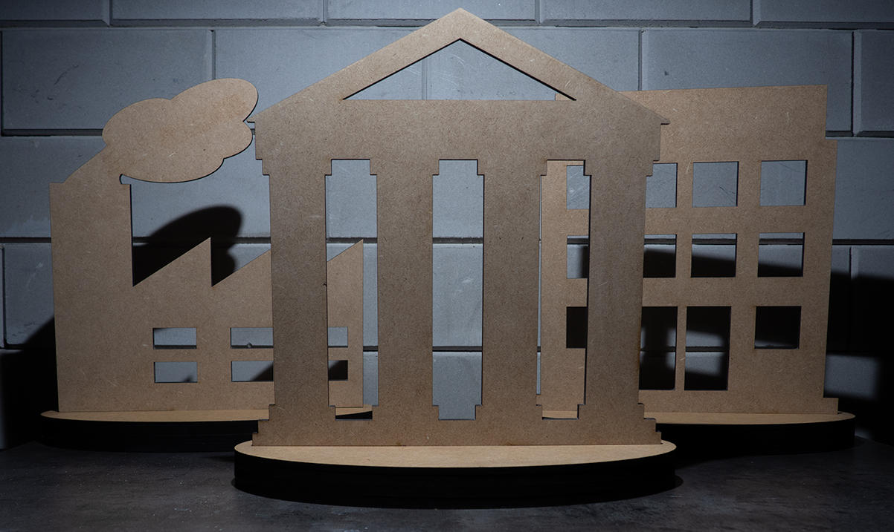

March 2018
How can a design concept support professionals to explore, visualise and facilitate value creation in a multi-stakeholder setting?
"Once people begin to act, they generate tangible outcomes in some context and this helps them discover what is occurring, what needs to be explained and what should be done next" (Weick, 1995, p.55). This text describes the intended meaning of the Satis-action method through which participants start acting together and generate tangible outcomes and a tangible context of the specific case or project they are working in. By doing so, they discover the ongoing situation (awareness), start explaining to each other their professional interpretation of the problem and the actions they can undertake (understanding), and thereby identify possible next steps towards a comprehensive solution.

Satis-action is an interaction method which endeavors the environment and dynamics of people, communities and organisations in a specific case around humans. The System Constellation Play is a communication tool to make the central figures and characters of this environment visual and tangible.
The technique of Satis-action and the tool System Constellation Play support professionals in their endeavor to fullfill their duties and the needs and wishes of an individual or organisation within its complex systemic environment.
De Vakmakerij provide workshops and training on Satis-action as a service which. The technique and tool are allready used in different conferences and real-life problem cases. For more information see the website of Satis-action.